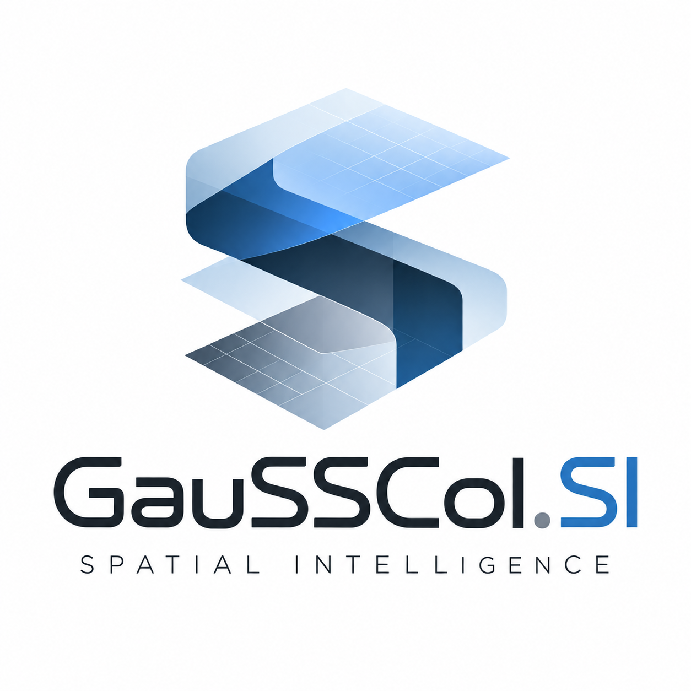

GauSSCol-3DGS-Experiments
FeaturedSelected 3D Gaussian Splatting experiments covering rendering, WebGPU compute, GPU/CPU sorting, appearance representations and performance benchmarking.
View on GitHub →I am a Software Architect with 25+ years of experience in CAD platforms, computational geometry, distributed systems, and AI-driven engineering systems.
For over 18 years at Autodesk, I contributed to the architecture and evolution of Fusion 360, guiding it from its conceptual stage into a large-scale, cloud-connected CAD platform.
My expertise encompasses geometric modeling, CAD frameworks, variational solvers, graphics pipelines, Graph Neural Networks (GNNs), AI-driven engineering systems, scalable software architecture, and modern C++ development in Agile CI/CD environments.

An independent R&D initiative exploring Spatial Intelligence through 3D representation, visual understanding, geometric learning and interactive computing.
Built using C++, WebGPU, WebAssembly, TypeScript, Python and PyTorch.
Selected 3D Gaussian Splatting experiments covering rendering, WebGPU compute, GPU/CPU sorting, appearance representations and performance benchmarking.
View on GitHub →Interactive browser demonstration and WebGPU viewer for 3D Gaussian Splatting.
View on GitHub →